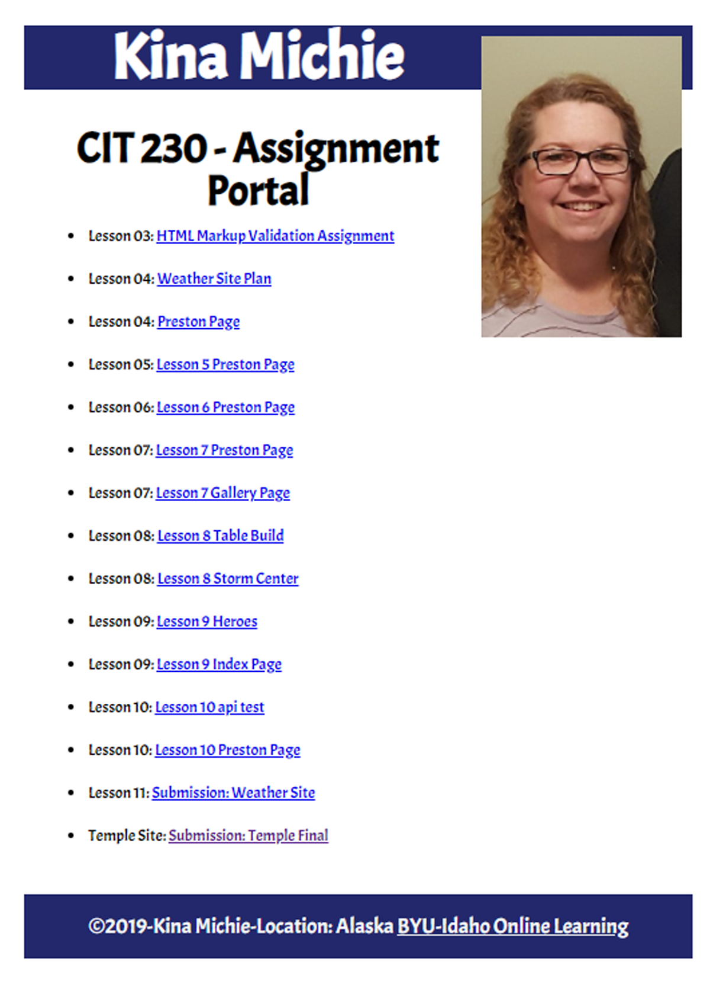
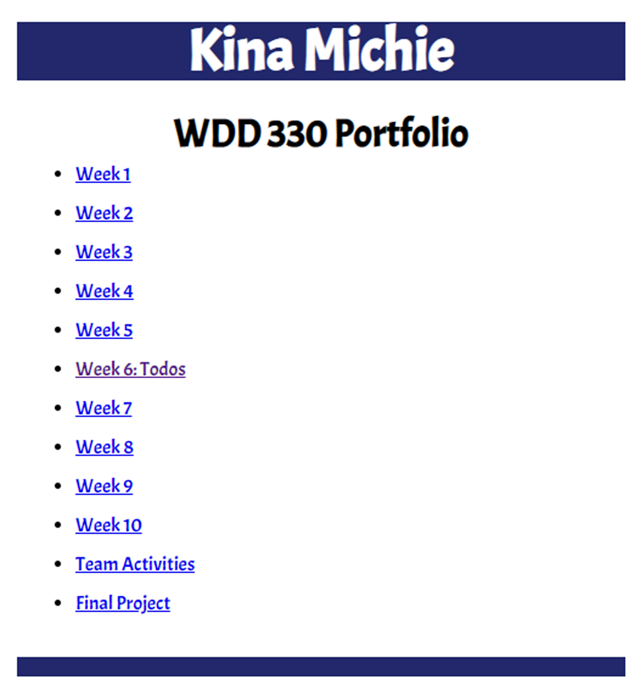
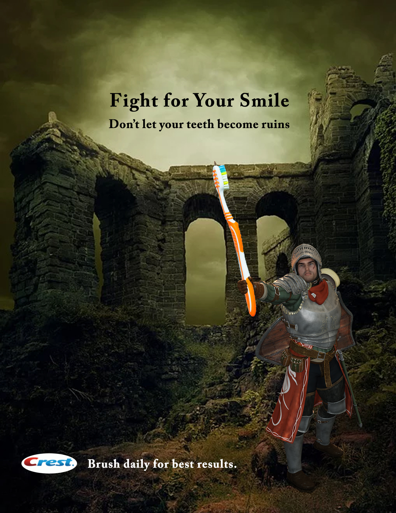

College Projects
CIT 230 Frontend Development
Click on the image and it will take you to the portal to the site I built.
CIT 330 Mobile Applications and Design
Click on the image and it will take you to the portal where you can see the projects I built.
COMM 130 Visual Media
This class focused on building ads for web media. Below is an example of my work.
CIT 336 Web Backend Development
Using PHP, Javascript, and SQL, I build a website project which required a database.
Other Classes I've Taken Pertaining to Web Development:
- CIT 225 Database Design and Development. This class taught SQL and how to work with Oracle.
- CIT 260 Object Oriented Programming. The computer language associated with this class was Java.
- CIT 262 System Analysis and Design. During the course of this class, I analyzed work flow and how to improve it in a technology oriented workplace.
- CS 308 Technical Communication. This class taught how to communicate effectively in technical environment, writing technical proposals, and evaluating data and troubleshoot technical issues.
- COMM 310 Creating Online Media. Throughout this class, I learned how to design ads for products that are online.
- COMM 315 Social Media Design. Learned how to market a brand and design ads for social media
- WDD 331 Advanced CSS. This class used SASS, Bootstrap, and animation.
- CS 364 Software Engineering 1. Throughout this class I learned how to write SRS and SDD documents.
- CSE 341 Web Backend Development II. Programed a website using NodeJs, EJS, and MongoDb.
- CSE 471 User Interface Eval & Design. Learned how to design, test, and analyze an app.